About the Artist
BerryVerrine is a Japanese digital artist popular on the platforms Pixiv and Twitter.
His art has been featured as the cover art for album Make your Colors by Japanese artist Ihcikados.
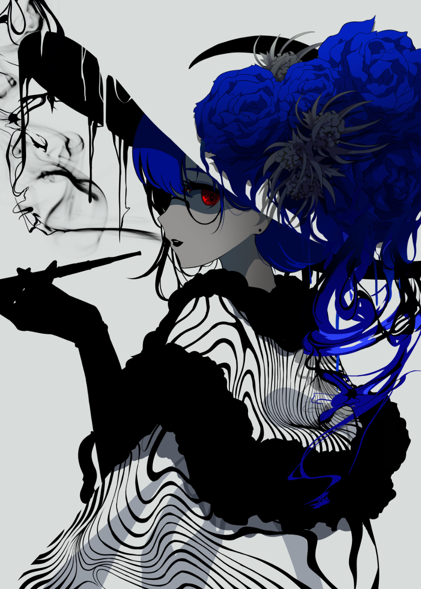
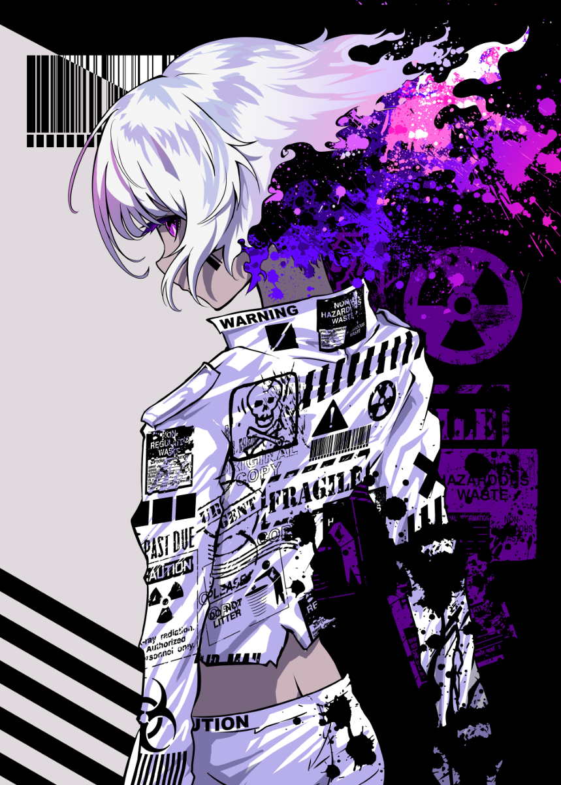


 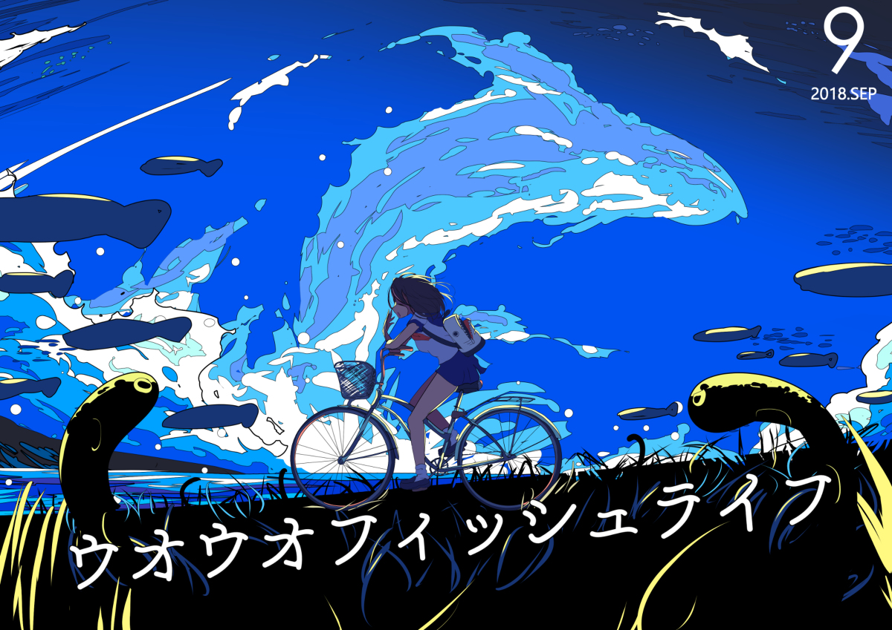
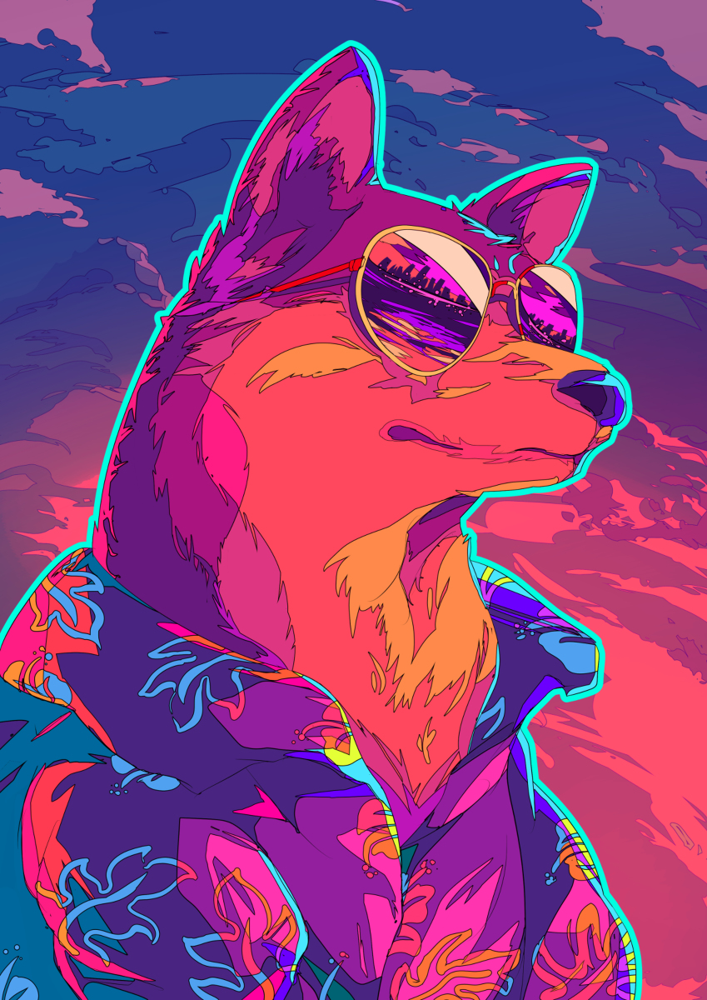
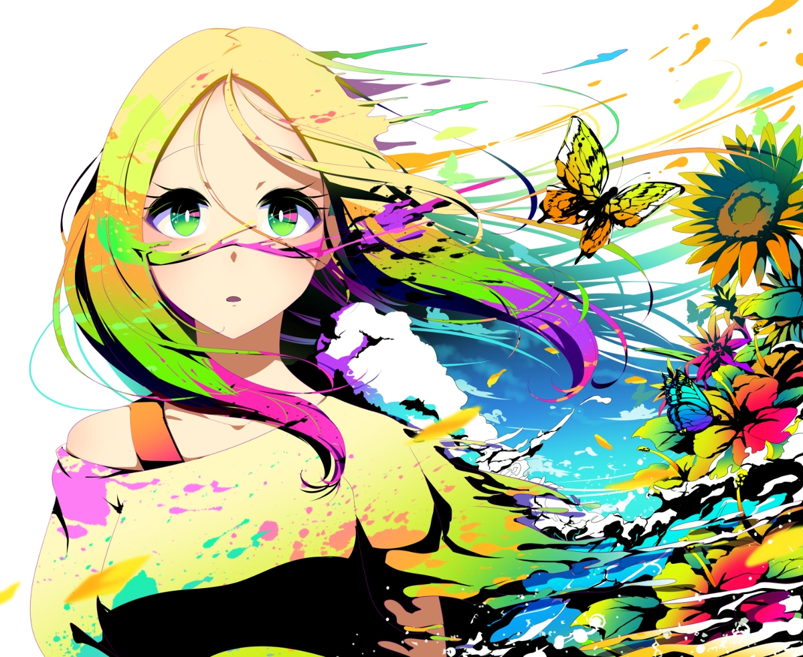
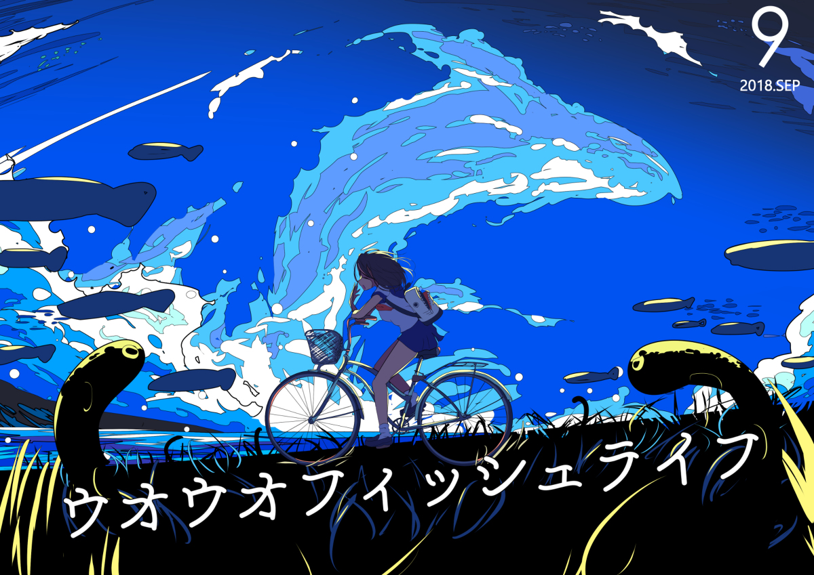
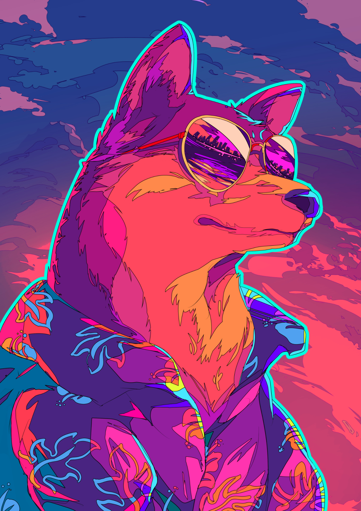
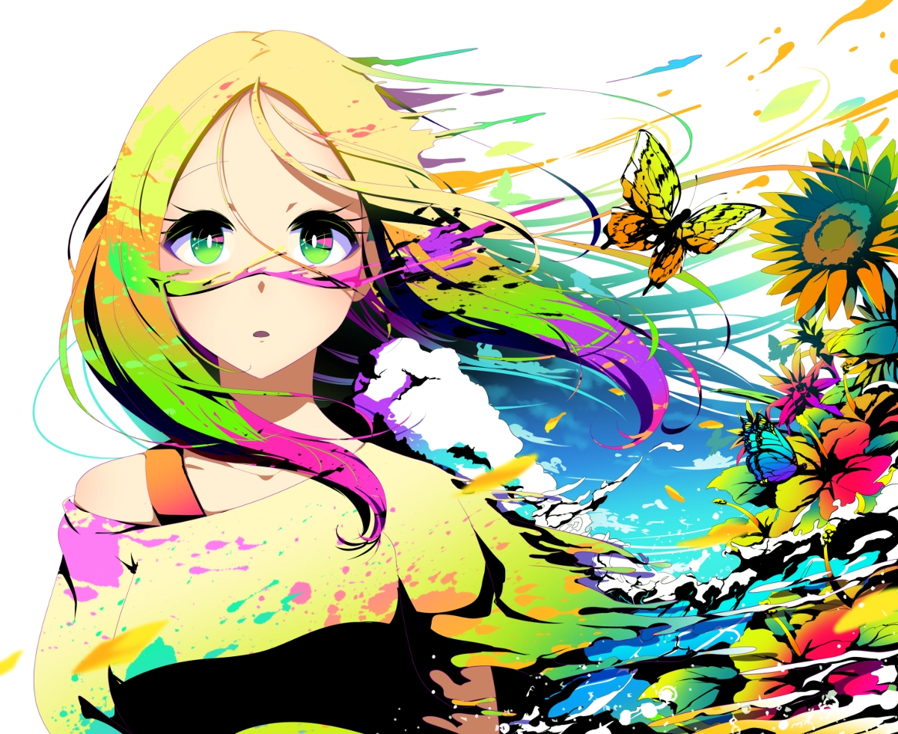
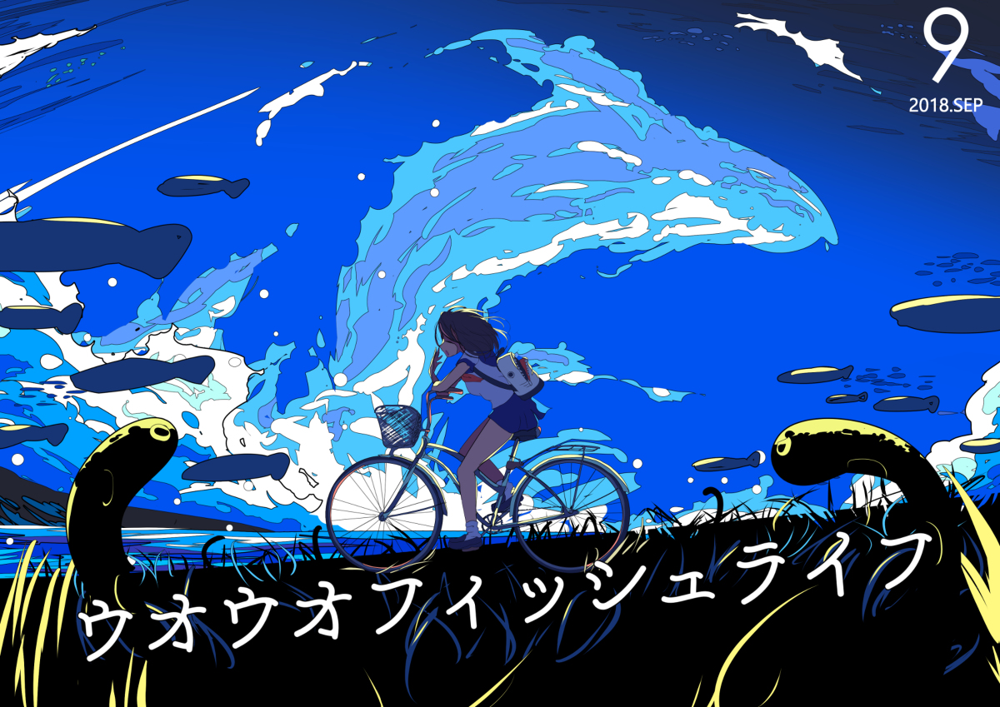
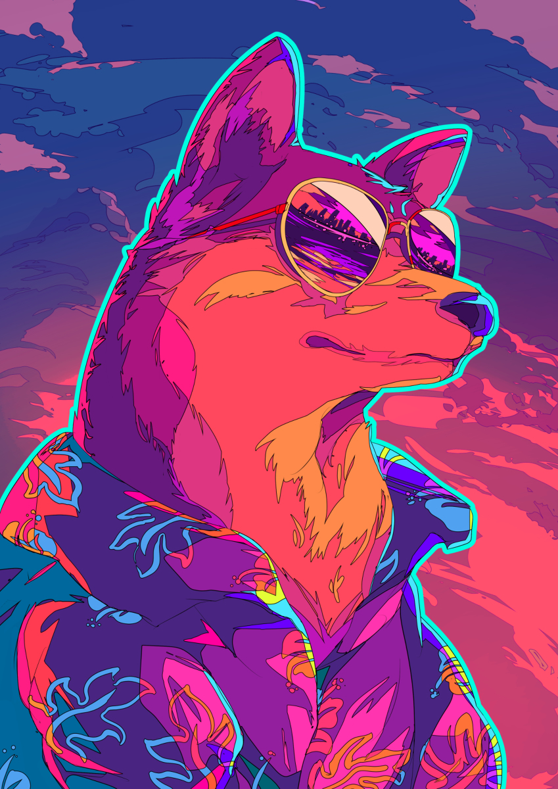
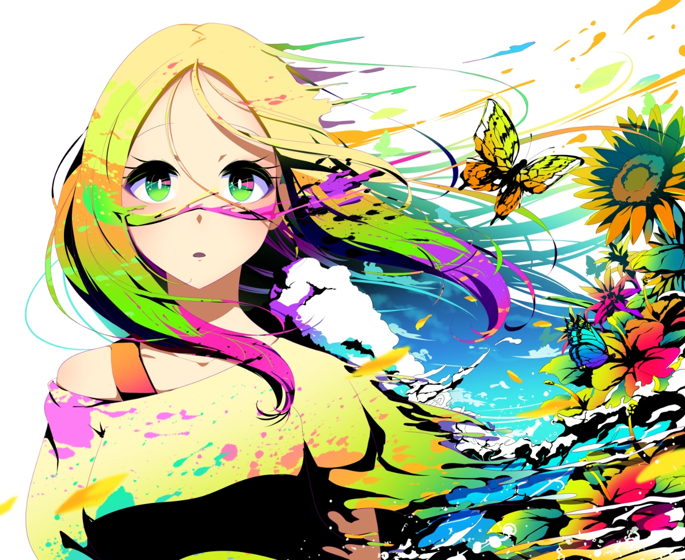